How-to
Learn it by doing
Short guides, one goal each, step by step. Every screenshot is the real application, captured automatically from a scripted run on a demo Brain: clicks, typing and voice are simulated, the rest is real. Guides marked Real answers show what the real model said, recorded once and replayed. For how things work underneath, see the Docs.
 Your first five minutesAdd a thought and a PDF, and see where the Archivist agent files them, without choosing anything yourself.
Your first five minutesAdd a thought and a PDF, and see where the Archivist agent files them, without choosing anything yourself.
 Arrange your panelsMove, dock, stack and shrink the panels around the graph, and get the default layout back.
Arrange your panelsMove, dock, stack and shrink the panels around the graph, and get the default layout back.
 Read a scanned PDFA PDF made of pictures of pages (a scan, a letter photographed by your bank) is read on your own computer, then filed and searchable like any document.
Read a scanned PDFA PDF made of pictures of pages (a scan, a letter photographed by your bank) is read on your own computer, then filed and searchable like any document.
 Find your way in the graphZoom from the whole Brain down to one text, fold what you are not using, filter, and switch to the timeline.
Find your way in the graphZoom from the whole Brain down to one text, fold what you are not using, filter, and switch to the timeline.
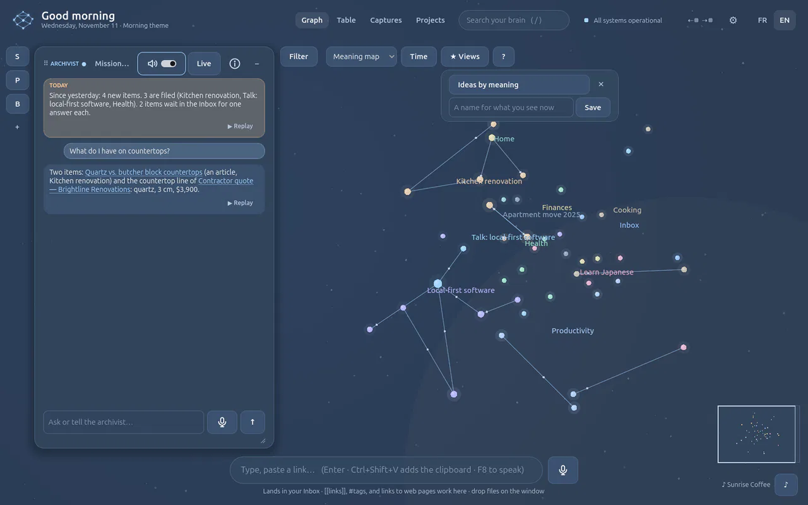
See your Brain from another angleLay the same items out by time, around one idea or by what they mean, and keep the angle you like under a name.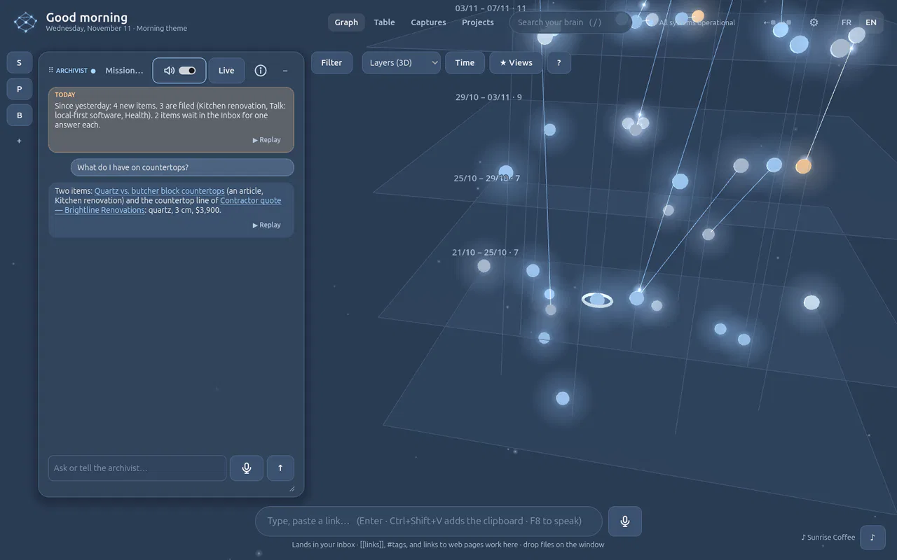
Watch your Brain growGo back to the Brain as it was on a given day, play it growing from its first item to now, and look at it in 3D. Share a project as a packExport part of your Brain as one .brain file, and bring in a pack someone shared, as a layer you can switch off.
Share a project as a packExport part of your Brain as one .brain file, and bring in a pack someone shared, as a layer you can switch off.
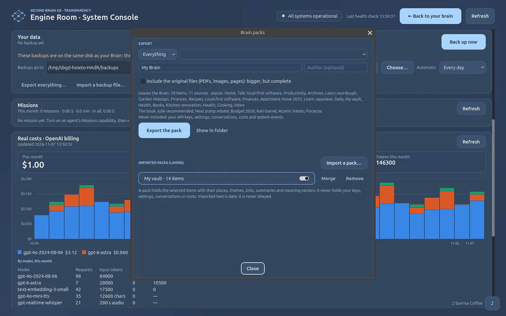
Bring your Obsidian vaultBring a folder of Markdown notes (an Obsidian vault here) into your Brain, with its links, places and pictures, without any AI call, and as a layer you can remove in one go.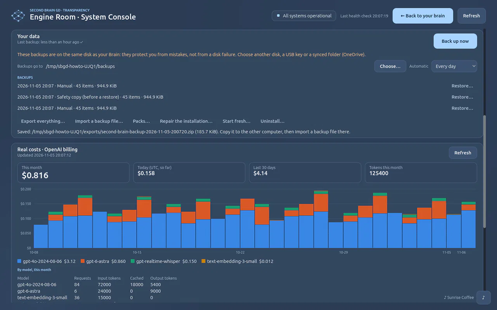
Back up and restoreYour whole Brain is backed up by itself every day; back up any time, bring any day back, or move it all to another computer. Nothing is ever erased without a checked backup first. Find how two ideas connectSearch by meaning, ask how two things you know are related, and keep the links that matter.
Find how two ideas connectSearch by meaning, ask how two things you know are related, and keep the links that matter.
 Search the web and keep a pageAsk a question about the world, read the answer with its sources, and keep the page you trust.
Search the web and keep a pageAsk a question about the world, read the answer with its sources, and keep the page you trust.
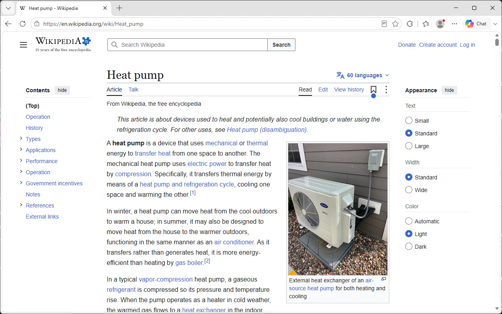
Connect your browserPair Microsoft Edge (or Chrome) with your Brain once; then send the page you are reading in one click, and let the Archivist open, add and close tabs when you ask.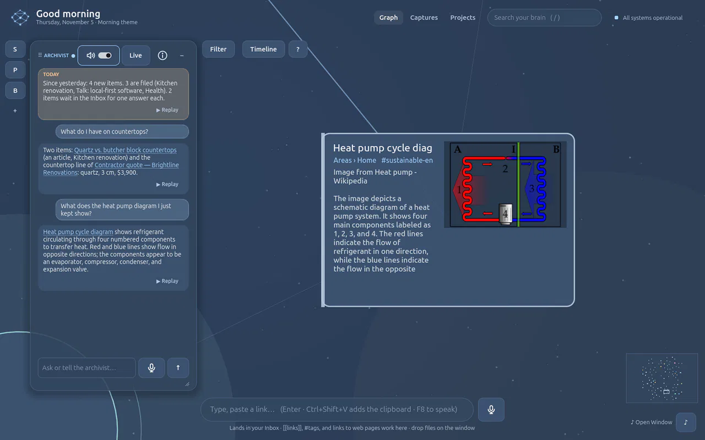
Keep the pictures that matterA page's main image and its figures (a diagram, a chart, a table shown as a picture) come with it; any other picture is one right-click away. Logos, icons and ads never come in. Organise by voiceMove, link and undo by naming things, the way you would ask a person.
Organise by voiceMove, link and undo by naming things, the way you would ask a person.
 Think an idea through with SparringTalk an idea through with a partner that challenges you, then keep only what you decided.
Think an idea through with SparringTalk an idea through with a partner that challenges you, then keep only what you decided.
 Create your own agentDescribe the agent you need out loud; the Agent Builder interviews you and writes it. You never write a prompt.
Create your own agentDescribe the agent you need out loud; the Agent Builder interviews you and writes it. You never write a prompt.
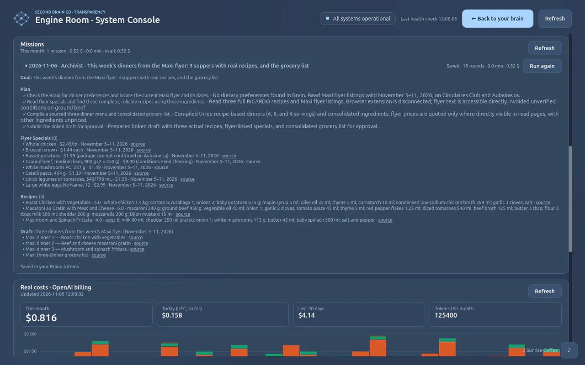
Plan the week's meals with a missionGive an agent a real job: it reads this week's flyer, asks which specials you want, finds real recipes and proposes the week; nothing enters your Brain before you approve.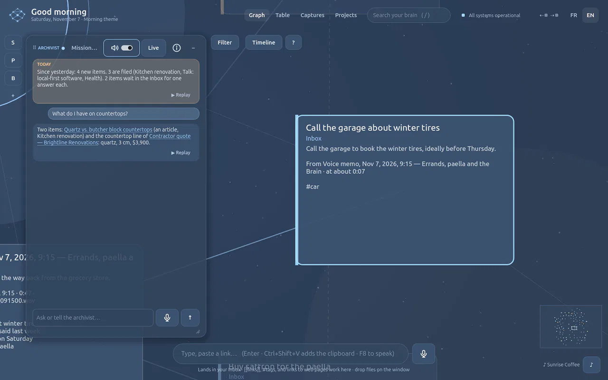
A voice memo becomes ideasRecord ideas anywhere with your phone, drop the memo on the window at home, and get its ideas, tasks and notes in your Brain, each linked to the memo and dated when you said it.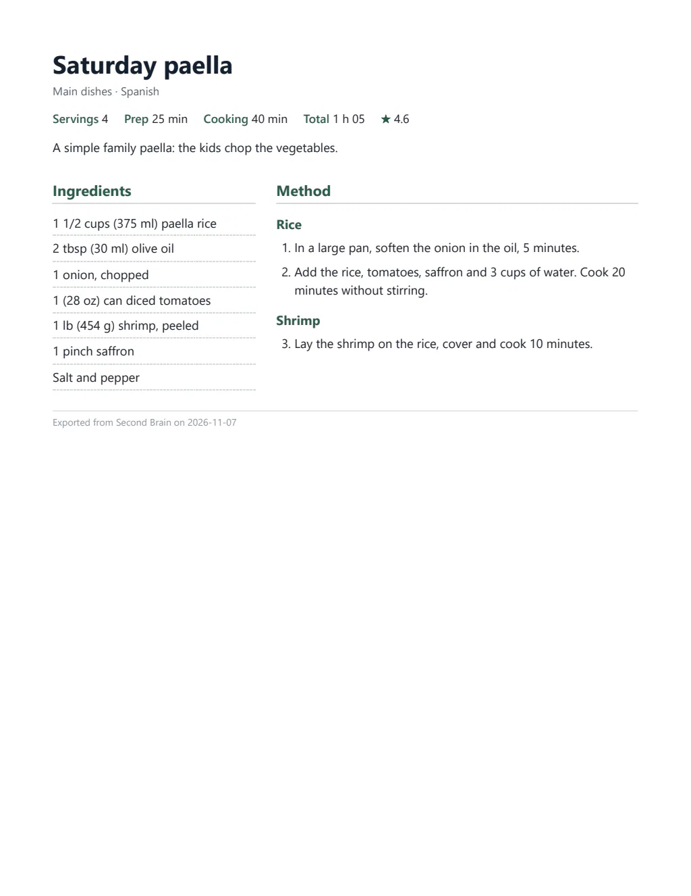
From recipes to a grocery list on paperPick the week's recipes, get one grocery list added up by aisle, and print it (or a recipe) on Letter paper.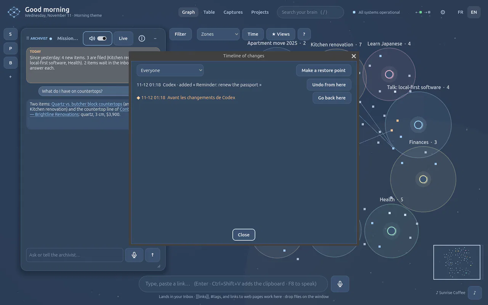
Connect an AI tool to your Brain (MCP)Any AI tool that speaks MCP (Claude Code, Codex, GitHub Copilot in VS Code, Cursor…) can read and search your Brain, on this computer only; it proposes, the archivist decides, and the timeline can undo it.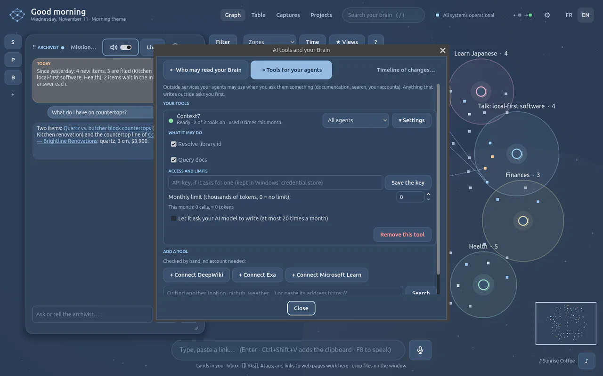
Give your agents tools (MCP servers)Connect an MCP server and its tools become your agents' tools: documentation, code, web search, your other apps. Any server works the same way, from the registry or from its address.Start · 5 min · 5 steps
Your first five minutes Real answers
Add a thought and a PDF, and see where the Archivist agent files them, without choosing anything yourself.
You need
- Second Brain GD installed, with your OpenAI key (Install)
-
Click the capture bar at the bottom (or press Ctrl+Space) and type a thought as it comes: Ask Northwind if the heat pump quote includes the smart thermostat.
No place to choose, no tags to add. The bar says where it would land if nobody filed it: your Inbox.

-
Press Enter.
The Archivist reads it and files it at once. Its receipt says what it is and where it went: “A question about a heat pump quote, filed in Areas › Home and linked to the heat pump rebate.” Undo, under the receipt, puts it back.

-
Drop a PDF on the window (or use + File in Places). Here, a quote for a heat pump.
The file is copied into your originals, read, summarised and filed: “A heat pump installation quote, filed in Areas › Home and linked to 2 related items.” The summary keeps what matters: $14,690 before taxes, a rebate of up to $5,000, valid until December 15.

-
Click Captures at the top.
Everything that came in, newest first, with its place, its type and where it came from (typed, spoken, a file, the web). Items still waiting in the Inbox show the Archivist's question in orange.

-
Back in Graph, zoom into the new item: scroll over it, or say zoom into the heat pump quote.
Close up, the card shows the quote's summary and its first page. Zoom further and the whole text is there, inside the graph.
If it does not work
- The item stays in the Inbox. The Archivist asks a question when it is not sure. Answer it in its panel, or drag the item into a place.
- No receipt at all. Filing needs your OpenAI key (Your OpenAI key). Without one, items wait in the Inbox.
- The PDF says it has no text. It is a scan: see Read a scanned PDF.
Start · 3 min · 7 steps
Arrange your panels App only
Move, dock, stack and shrink the panels around the graph, and get the default layout back.
-
Start from the default layout.
The Archivist's panel is docked on the left. On the far left, the rail holds the panels you have shrunk (S Sparring, P Places, B the Agent Builder) and + to create an agent.

-
Drag a panel by its title bar (⠿). Here, Sparring.
While you drag, the place where it would land lights up. Near the left, right or bottom edge it docks; anywhere else it floats where you drop it.

-
Drop it near the right edge. Then click P on the rail to open Places.
Sparring is docked on the right. Places opens on the left, under the Archivist: two panels on the same edge share it.

-
Drag the short line between two stacked panels.
One gets more height, the other less. Any panel also resizes from its bottom-right corner.

-
Click – in a panel's title bar, or double-click its title.
It shrinks into its letter on the rail; a click on the letter brings it back where it was. From the keyboard: Ctrl+1 the Archivist, Ctrl+2 Sparring, Ctrl+3 Places, Ctrl+4 the item tile, and up for your own agents.

-
Press Tab on the graph.
Every panel steps aside: the graph alone. Tab again brings them back.

-
Lost? Scroll to the bottom of Places and press Reset the panel layout.
Everything goes back to its default place. Otherwise your layout is remembered from one session to the next.
If it does not work
- A panel is nowhere to be seen. Look for its letter on the rail, or press its shortcut.
- A panel covers what you need. Shrink it, press Tab, or dock it on another edge.
More: Arranging the panels
The Brain · 4 min · 5 steps
Read a scanned PDF Real answers
A PDF made of pictures of pages (a scan, a letter photographed by your bank) is read on your own computer, then filed and searchable like any document.
You need
- Windows 10 or 11 (its OCR is built in), or Tesseract on Linux (Files and originals)
-
Drop the scanned PDF on the window. Here, a two-page home insurance renewal.
There is no text to select in such a file, so the Brain reads the pages itself, one by one, with the OCR built into Windows. A line at the bottom follows it: page 1 / 2 read (local OCR). Nothing leaves your computer for this.

-
Wait a few seconds.
The Archivist files what the pages say: the policy number, the renewal date, the new premium of $1,284 (up 9.2 %), the new deductible and the leak-detector discount, with three themes.

-
Click the item, then View document in its tile, or say open the document.
The original pages, full screen; ← → turn them. At the top: Read by Windows OCR.

-
Close it (Esc) and ask the Archivist: When does my home insurance renew, and what is the new premium?
The answer comes from the scanned pages, with a link to the document: December 1, 2026, $1,284, up from $1,176.

-
Optional: open the document again and press Re-read with AI.
Local OCR sometimes confuses characters: on this scan it read $l,ooo for $1,000. The AI reading sends the page images to OpenAI and replaces the text; the label becomes Read by AI. It is never done unless you ask.
If it does not work
- “No local OCR here”. On Linux, install Tesseract:
sudo apt install tesseract-ocr. On Windows, check that the document's language is installed (Settings → Time & language → Language). - Figures are wrong. Use Re-read with AI on that document.
- It takes long. Big scans are read page by page; the line at the bottom shows where it is.
The Brain · 4 min · 7 steps
Find your way in the graph App only
Zoom from the whole Brain down to one text, fold what you are not using, filter, and switch to the timeline.
-
Zoom out (mouse wheel, or say overview).
Each place is a zone with its name and how many items it holds; the Inbox sits in the middle. Zones keep their spot, so things stay where you left them.

-
Zoom towards a place, or say zoom into Kitchen renovation.
Items become cards: their title, place, themes and first lines, and the first page of a PDF.

-
Keep zooming on one card.
The scale disappears and you are reading the full text, inside the graph. The minimap, bottom right, keeps you oriented.

-
Double-click a place you are not using, or say fold Cooking.
Its items gather into a +N badge. Double-click it again to unfold.

-
Click Filter, or say show only the articles.
Filter by type, origin (typed, spoken, web, files, packs), date, or a word or theme. × Show all clears it.

-
Click ?.
What each line means: a real link (solid, with a dot travelling along), a suggestion by meaning (dashed), belonging to a place, carrying a theme, and the golden path that answers “how is X connected to Y?”.

-
Open the view picker (Zones) and choose Timeline, or say show the timeline.
The same items along time, one lane per place, from minutes to months. Choose Zones to go back to the zones.
If it does not work
- The graph feels crowded. Fold places, filter, or press Tab to hide the panels.
- You are lost. Zoom all the way out, or click a spot on the minimap.
More: The graph · Voice commands
The Brain · 4 min · 5 steps
See your Brain from another angle App only
Lay the same items out by time, around one idea or by what they mean, and keep the angle you like under a name.
-
Open the view picker in the graph's bar (it says Zones) and choose Timeline. Then, in the second picker, choose Lanes: types.
The same items along time, one lane per type of item instead of one per place; Lanes: origins sorts them by how they came in (typed, spoken, web, files). The strip over the axis shows the busy weeks.
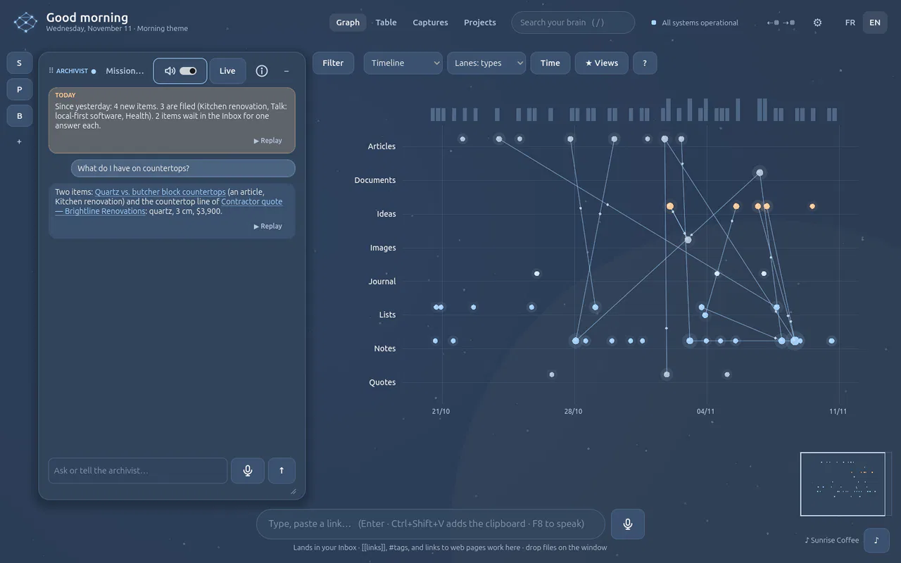
-
Click an item, then choose Focus in the view picker.
That item sits in the middle and what is linked to it sits on rings, one, two and three links away, each with its name. Everything else is out of sight.
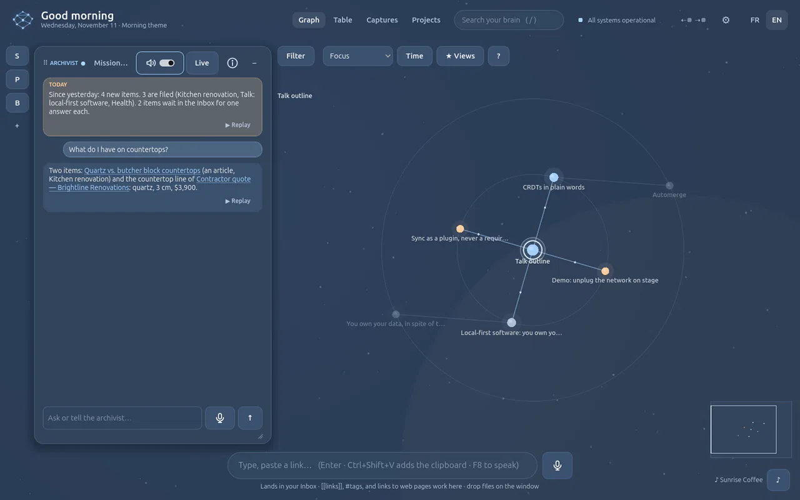
-
Click a neighbour.
It becomes the centre. The breadcrumb at the top left remembers the items you came through: click one to walk back.
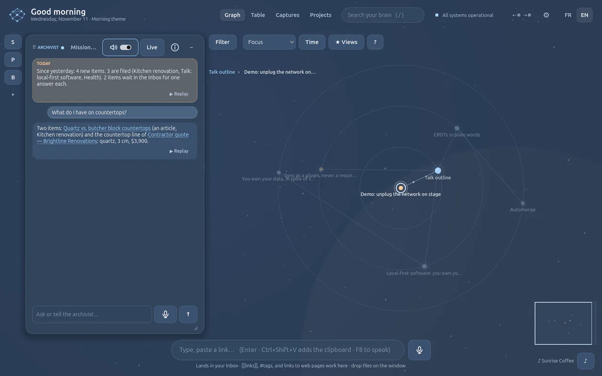
-
Choose Meaning map.
Items sit where their meaning puts them, whatever place they are filed in: close ideas are close. Each item wears its place's colour and each place's name is written where its items gather, so an item far from its place's name is one filed far from what it means.
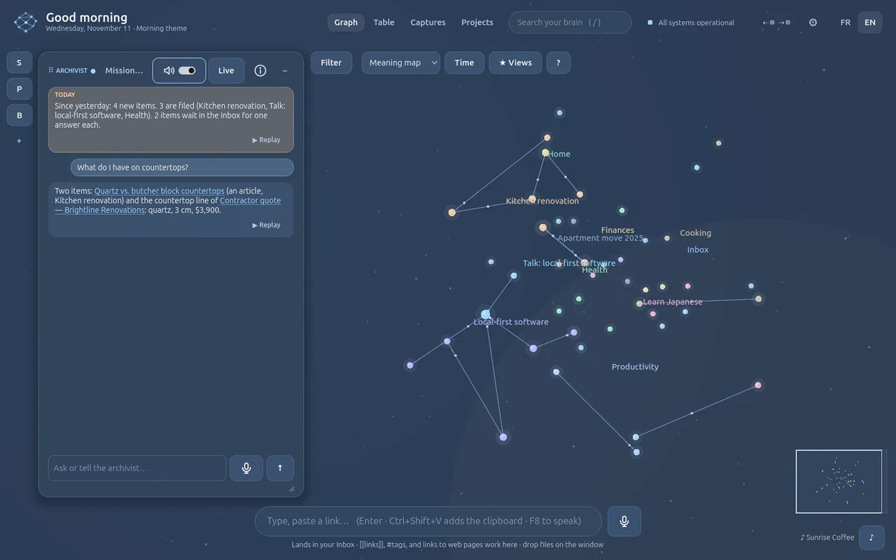
-
Click ★ Views, type a name and press Save.
The view, its filters and where you were looking are kept under that name. Click the name later and the graph glides back to it; ✕ forgets it.
If it does not work
- Focus opens around an item you did not choose. With nothing selected it opens around the most linked item: click an item first.
- The Meaning map does not open. It places items with the meaning memory, which needs your OpenAI key: without it the app says so and stays in the current view.
More: The graph
The Brain · 3 min · 5 steps
Watch your Brain grow App only
Go back to the Brain as it was on a given day, play it growing from its first item to now, and look at it in 3D.
-
Click Time in the graph's bar and drag the slider to the left.
The Brain as it was at that moment: the items that came later step out, and the date and the count are written beside the slider. It works in every view.
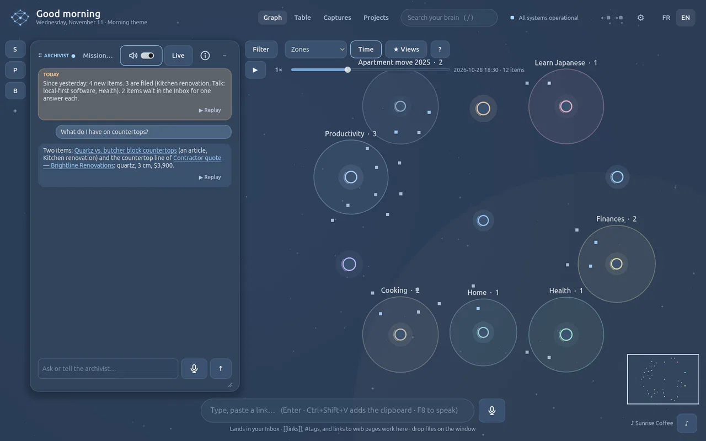
-
Press ▶.
The Brain grows from its first item to now. Each arrival lights up with a ring and says its name, its links draw themselves, a large date shows the moment and the camera follows the growth, then comes home. The button beside ▶ sets the speed: 0.5×, 1×, 2×, 4×.
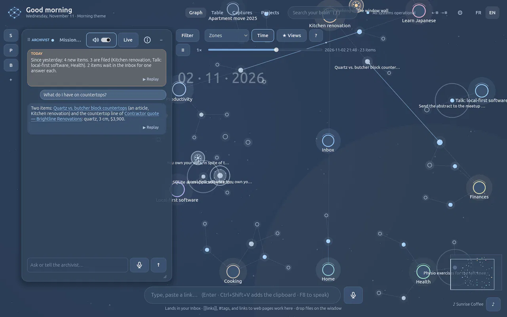
-
Choose Layers (3D) in the view picker.
The zones stacked through time: one plane per period, the oldest at the bottom. A place is a column through the planes, an item a ball of light on the plane of the moment it came in. It turns slowly until you touch it: drag to turn, the wheel to zoom.
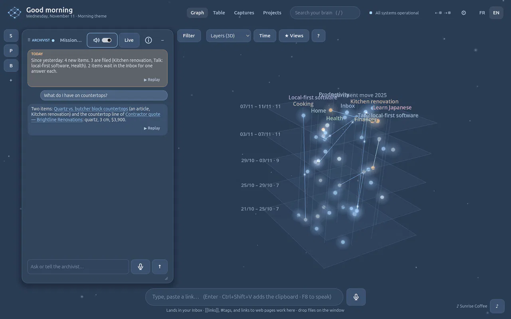
-
Press ▶ again, in 3D.
The planes fill up from the bottom, each arrival pops in, and the camera rises with them.
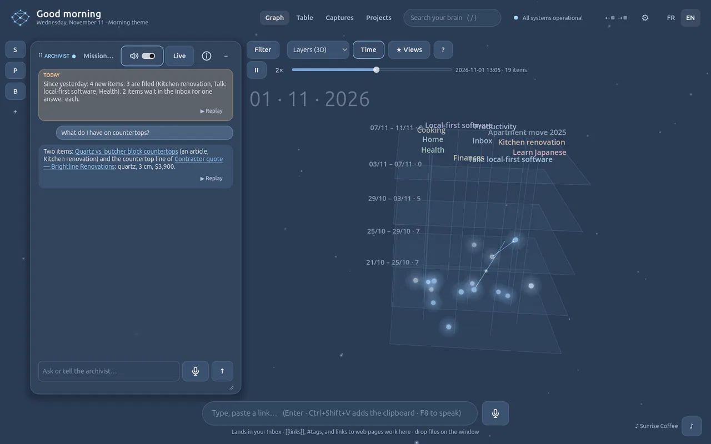
-
Click an item.
The camera flies to it and a ring marks it (its name follows your pointer); a click on nothing flies back. Double-click an item to land on it in the flat graph, where reading happens.
If it does not work
- The play shows mostly nothing. A Brain with long quiet stretches plays a lot of empty time: raise the speed to 4×.
- In 3D, place names sit on top of each other. Turn the scene: they separate from another angle.
- The light is faint. On the light Paper theme the glow shows little: try another theme (the ♪ button).
More: The graph
The Brain · 4 min · 4 steps
Share a project as a pack App only
Export part of your Brain as one .brain file, and bring in a pack someone shared, as a layer you can switch off.
-
Open the engine room (the status pill at the top right), then Your data → Packs… (or say export the Kitchen renovation project). Choose what leaves: a place, a theme, a search or chosen items.
Before anything is written, the preview says what will leave (7 items, 3 sources) and what never does: your keys, settings, conversations and costs.

-
Add a title and your name, tick Include the original files if the PDFs should travel too, and press Export the pack.
One file lands in the
exportsfolder of your data folder; Show in folder opens it. Send it like any file.
-
To bring one in, drop a
.brainfile on the window, or press Import a pack…. Here, Julie's notes on sourdough.It becomes a layer: 4 items from Julie, listed with a switch to turn it off, Merge to make the items yours, and Remove to take it all out without touching your own items.

-
Close the dialog and look at the graph.
Julie's items have their own place, Sourdough, with its links and themes, ready to search and to connect to yours.
If it does not work
- “Nothing to export”. The selection is empty: choose another place or search.
- An imported pack looks wrong. Switch its layer off, or remove it: your own items are never changed by an import.
More: Brain packs
The Brain · 3 min · 5 steps
Bring your Obsidian vault App only
Bring a folder of Markdown notes (an Obsidian vault here) into your Brain, with its links, places and pictures, without any AI call, and as a layer you can remove in one go.
You need
- A folder of notes: an Obsidian vault, a Logseq graph, a Notion export or plain Markdown files
-
Drop the vault's folder on the window (or click + Folder in Places, or say importe mon vault Obsidian).
Nothing comes in yet. The preview says what it found: Obsidian vault detected, 14 notes, 20 links, 9 places, the 2 links that point to notes not written yet, the template folder left out, the picture that comes along, and the cost: less than a cent, for the meaning of the notes only.
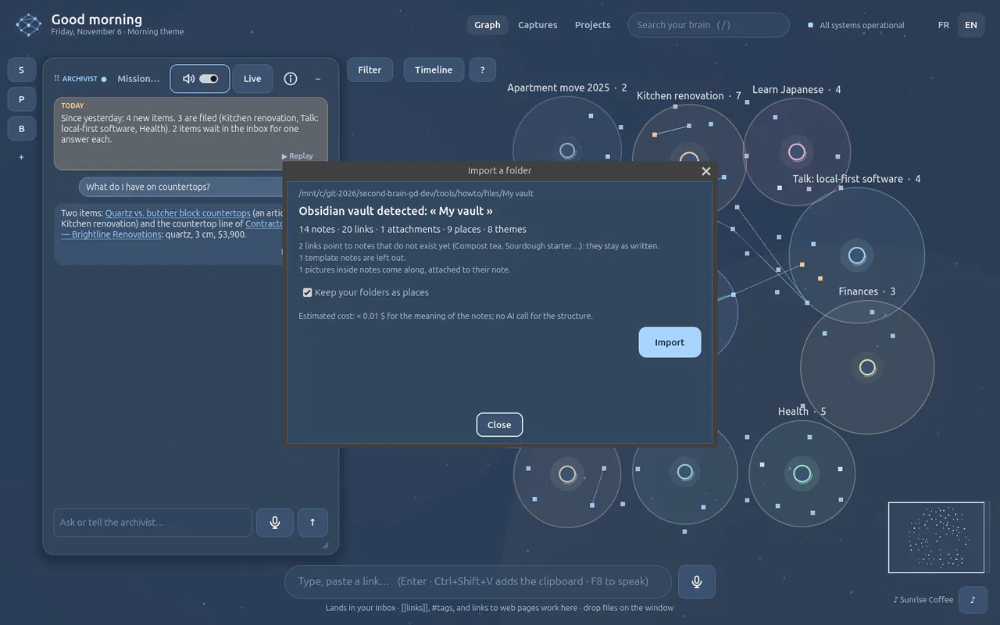
-
Press Import.
The report: 14 new items, 18 of 20 links found their note, and the two that point nowhere, named. The structure was read on your computer, without the AI.
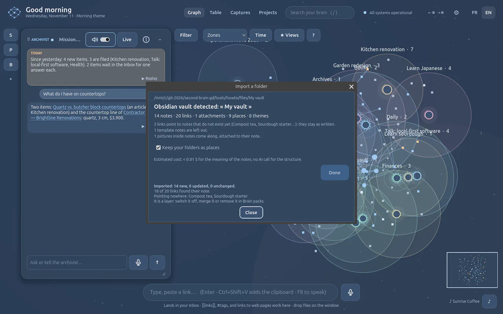
-
Close the dialog and look at the graph.
Your folders became places: 1. Projects/Garden redesign is the project Garden redesign, 2. Areas/Health an area, 4. Archives the archive. Each note's links are your links; tags became themes.
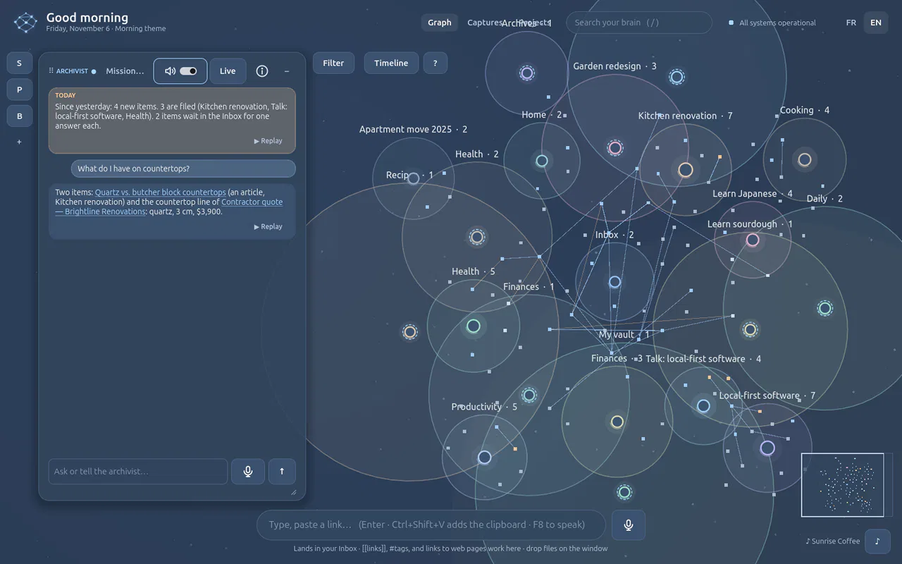
-
Zoom into Raised beds.
The note's picture is kept with it and shows on its card. Its front matter (tags, status, dates) stays readable at the top. Later, the Archivist adds links by meaning on top of yours.
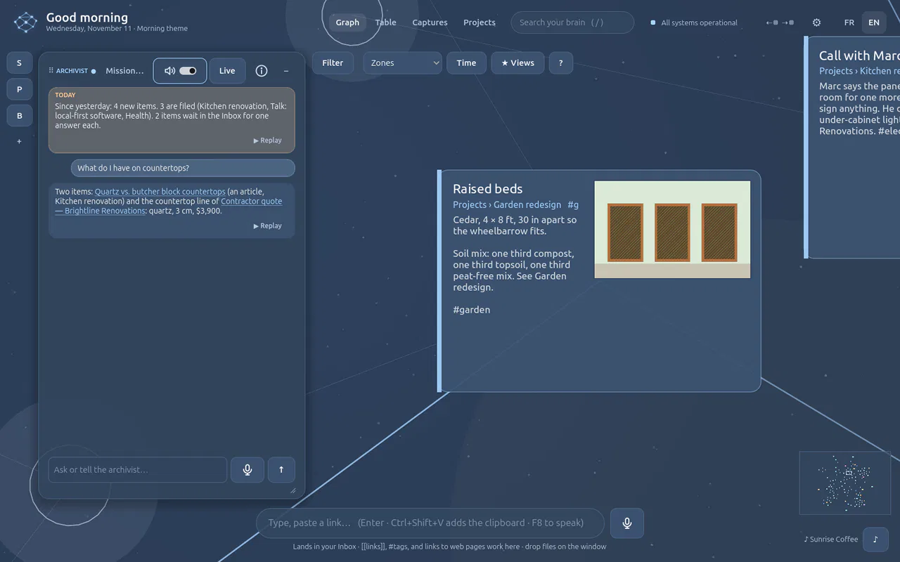
-
Open the engine room (the status pill at the top), then Your data → Packs….
The vault is a layer: switch it off to hide it, merge it to make it yours, or remove it in one go. Import the same folder again later: only new and changed notes come in.
If it does not work
- The preview says Markdown folder, not Obsidian vault. The folder has no
.obsidianfolder; links and tags are read the same way. - A link points nowhere. Its note does not exist in the folder (Obsidian shows it greyed out too). It stays as written in the item.
- A PDF inside a note did not come. Only pictures come along for now; drop the PDF itself to add it.
More: Import a folder
The Brain · 3 min · 5 steps
Back up and restore App only
Your whole Brain is backed up by itself every day; back up any time, bring any day back, or move it all to another computer. Nothing is ever erased without a checked backup first.
-
Open the engine room (the status pill at the top right): the Your data card.
When the last backup was taken, where backups go and how often (every day by default). Here the orange line says they sit on the Brain's own disk: Choose… another disk, a USB key or a synced folder (OneDrive) so they survive a disk failure.
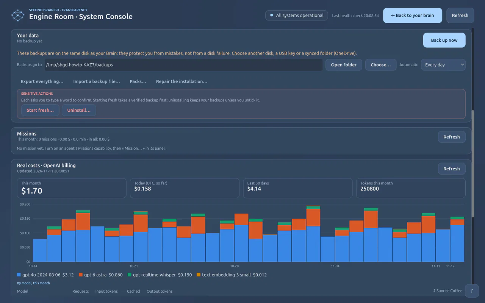
-
Back up now (or say back up now).
Everything: items, documents and pictures, conversations, your agents, the undo history, settings. Never your API key. Files already backed up are not copied again, and the backup is read back and checked.
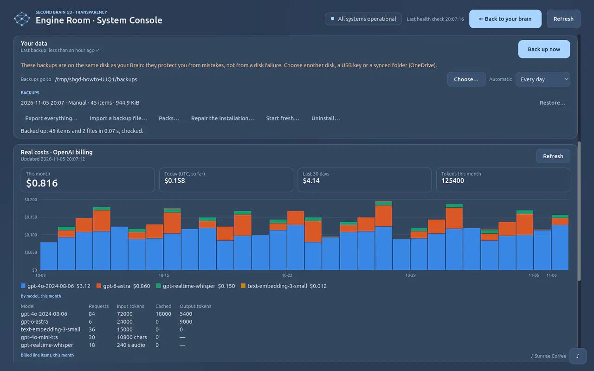
-
Next to a backup, Restore…, then type the word it asks for.
Typing the word is the only way: no click by mistake, and never by voice.
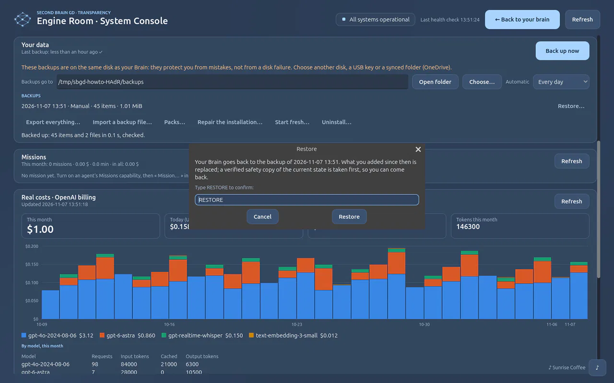
-
Confirm.
Your Brain is back to that moment. The state just before is kept as a safety copy in the list: Restore it to undo the restore.
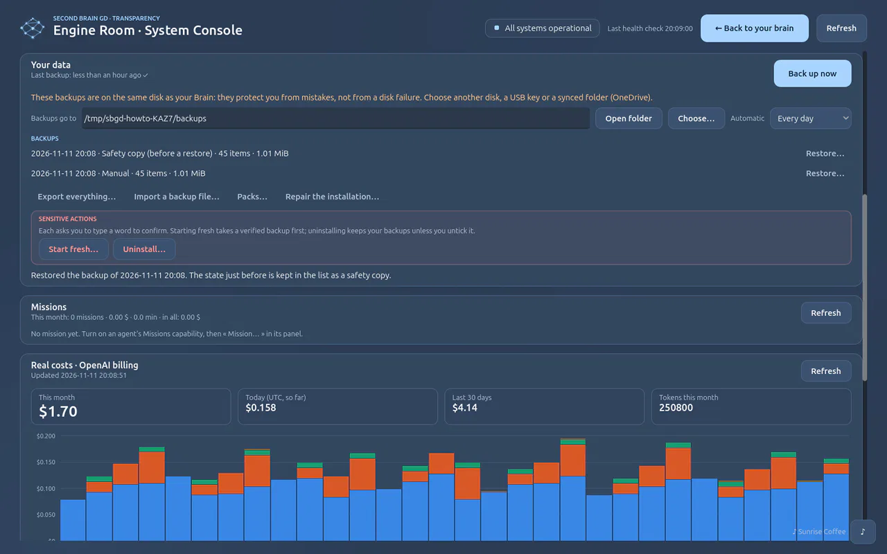
-
Export everything…
One
.zipfile with the whole Brain. On the other computer: Import a backup file…, then restore it.
If it does not work
- “The backup failed: cannot write”. The chosen folder is gone (a USB key not plugged in?): choose it again or another one.
- You want to start over. Start fresh… in the same card: a checked backup first, then an empty Brain; Restore brings the old one back.
More: Backups
Find and connect · 3 min · 4 steps
Find how two ideas connect Real answers
Search by meaning, ask how two things you know are related, and keep the links that matter.
-
Type in Search your brain at the top (or press /): countertops.
The matching items light up in the graph and are listed with why they matched: by meaning, with a score, or by their words.

-
Ask the Archivist: How is the opening story for my talk connected to Automerge?
The path is drawn in gold through the graph, and the answer tells it step by step: the story shares the #talk theme with the talk outline, which links to CRDTs in plain words, which cites Automerge.

-
Click an item to open its tile. Here, a note just written about merging edits without a server, linked to nothing yet.
Under its text: its connections (none), then Related ideas: items close in meaning that are not linked yet, here CRDTs in plain words. In the graph, a suggestion is a dashed line.

-
Press ✓ next to a related idea to keep it (or ✕ to dismiss it for good).
The suggestion becomes a real link, drawn as a solid line, and it now counts in paths and searches.
If it does not work
- “No path”. The two items share nothing yet: link them, or add a note that connects them.
- No related ideas. They appear once items are indexed by meaning (a few seconds after they come in).
More: The graph
Find and connect · 3 min · 3 steps
Search the web and keep a page Real answers
Ask a question about the world, read the answer with its sources, and keep the page you trust.
You need
- Internet on (it is by default: Internet)
-
Ask the Archivist: Search the web: what size of circuit does an induction cooktop need?
A short answer (a dedicated 40 A circuit for a 30-inch model, 50 A for some 36-inch ones, check the model's rating) with its sources listed as links under it. A click opens a source in your browser.

-
Say which one to keep: Add the first source to Kitchen renovation.
The page is downloaded from your computer, kept as an original, summarised and filed where you said. Undo takes it out again.

-
Zoom into it in the graph.
The page's summary and key points, in your Kitchen renovation project, ready for search and for the agents.
If it does not work
- A site refuses automatic reading. The page becomes a reference card (title, what the search said, the link). With the browser extension, send it as your browser shows it.
- Nothing is searched. Check that Internet is on for this agent (ⓘ, the Internet switch).
More: Internet
Find and connect · 5 min · 10 steps
Connect your browser Real answers
Pair Microsoft Edge (or Chrome) with your Brain once; then send the page you are reading in one click, and let the Archivist open, add and close tabs when you ask.
You need
- The extension loaded once:
edge://extensions→ Developer mode → Load unpacked → thebrowser-extensionfolder of the project (Browser extension)
-
In the app: Captures → Send from browser… → Pair a browser.
A one-time code and the port the Brain listens on. The code works once and only for 10 minutes.
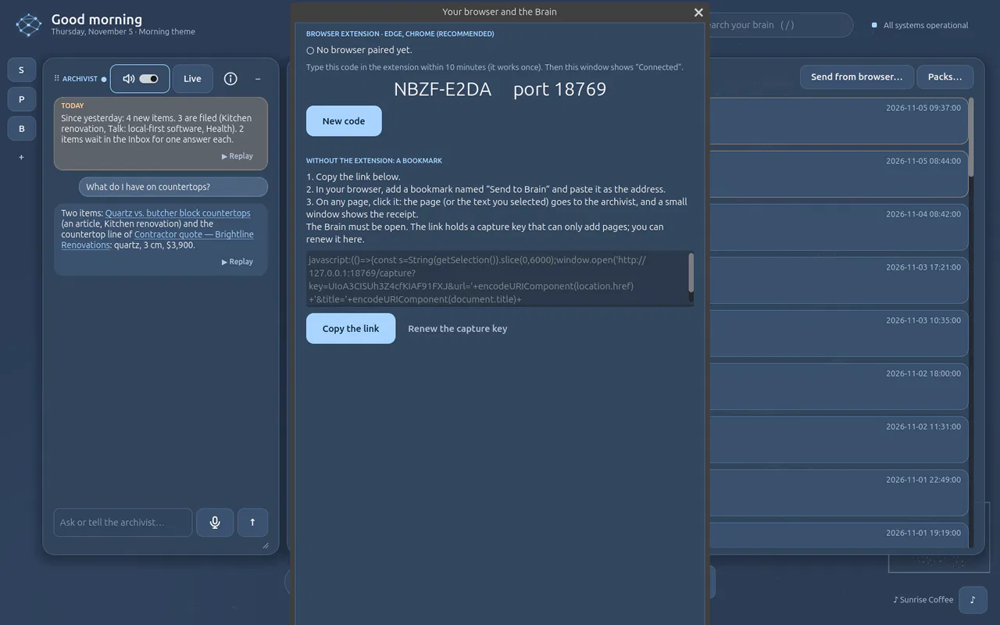
-
In Edge, click the Second Brain icon in the toolbar and type the code and the port.
The extension's popup, in Edge. Keep the box ticked if you want to say “add it” for the pages the Brain opens.
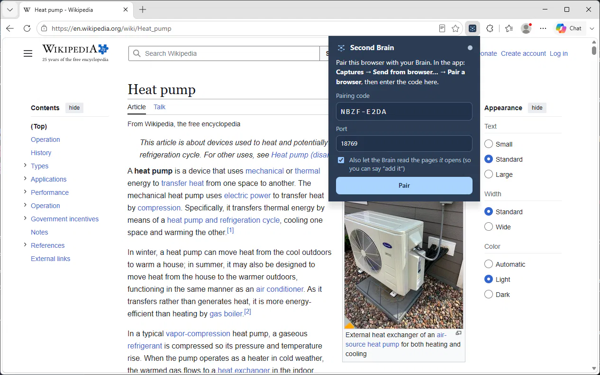
-
Click Pair.
Edge itself asks whether the extension may read the pages. Click Allow. It only ever reads a page you send, or one the Brain opened for you.
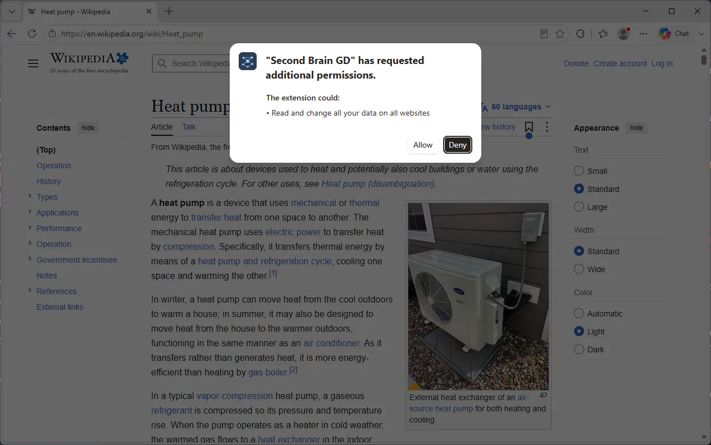
-
Back in the app.
● Connected: Edge, with the extension's version. It reconnects by itself whenever the app is open.
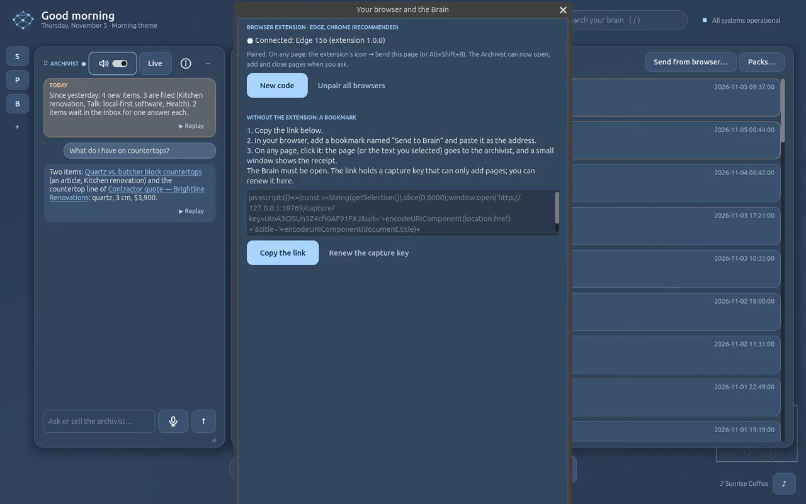
-
On any page, the icon → Send this page (or Alt+Shift+B).
The receipt shows in the popup: the page as Edge shows it (after your login, nothing downloaded again) is read, summarised and filed.
-
Look in Captures.
The page is there, filed by the Archivist, like anything else you add.
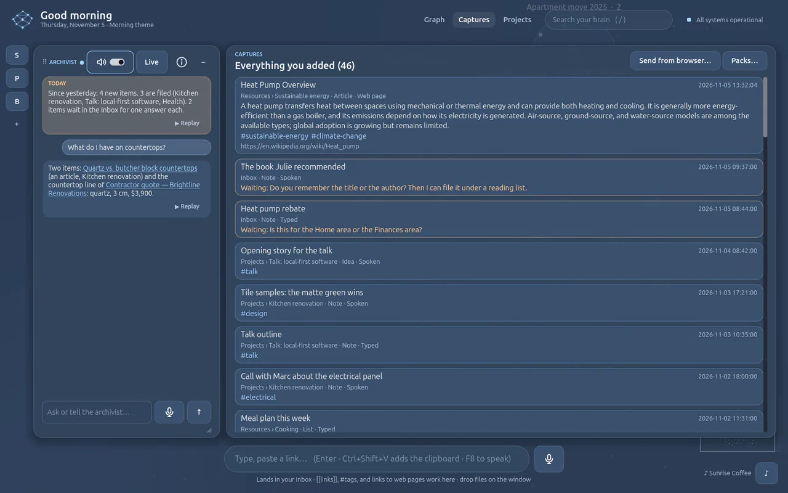
-
Ask the Archivist: Search the web: do cold-climate heat pumps still work at -25 °C?
An answer with its sources, as links.
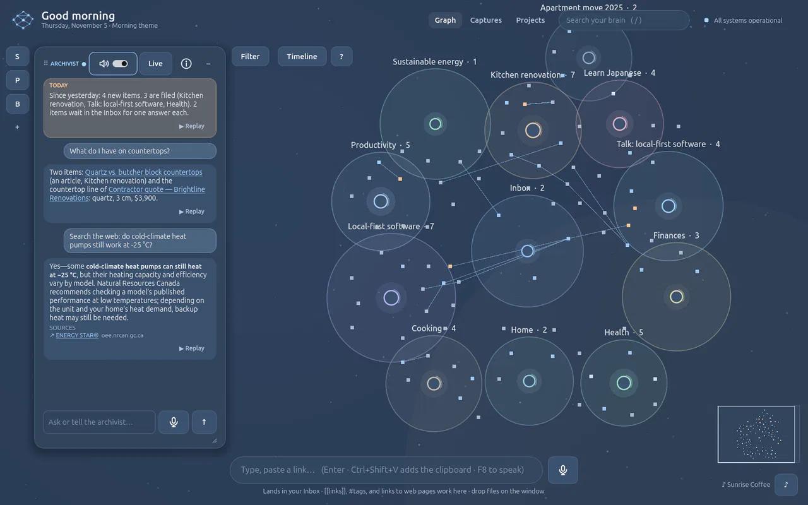
-
Open the first one.
Edge opens it in a new tab, in front: here a PDF from Natural Resources Canada, in Edge's own viewer. The Brain remembers it opened that tab.
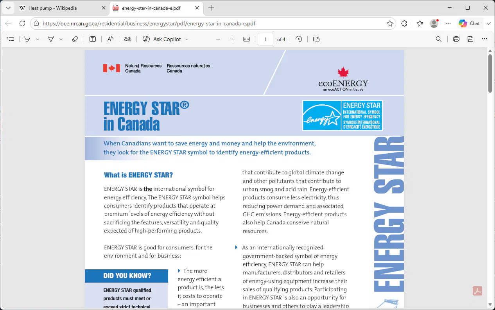
-
Add it.
The tab is kept and filed, with a receipt and Undo. A web page is taken as Edge shows it; a PDF, which the extension cannot read inside Edge's viewer, is downloaded by the Brain instead.
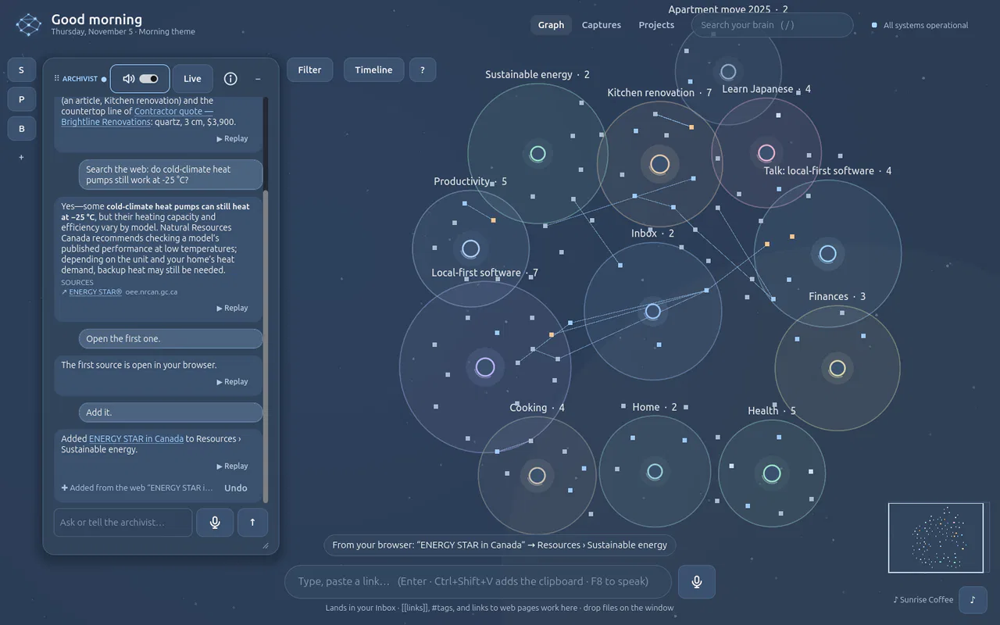
-
Close it.
Edge closes the tab the Brain opened. Your own tabs are never touched.
If it does not work
- “The Brain is not reachable”. The app must be open, and the port in the popup must be the one the app shows.
- “Wrong code” or “no pairing code is active”. Ask the app for a new code (it works once, 10 minutes).
- “Add it” says the extension may not read pages. Open the popup and click Allow reading the pages the Brain opens.
More: Browser extension · Internet
Find and connect · 4 min · 6 steps
Keep the pictures that matter Real answers
A page's main image and its figures (a diagram, a chart, a table shown as a picture) come with it; any other picture is one right-click away. Logos, icons and ads never come in.
You need
- The browser extension, paired (Connect your browser)
-
On a page with pictures: the extension's icon → Send this page.
The receipt says how many pictures came with the page: at most five, the ones that carry something. Each is kept as it was in Edge.
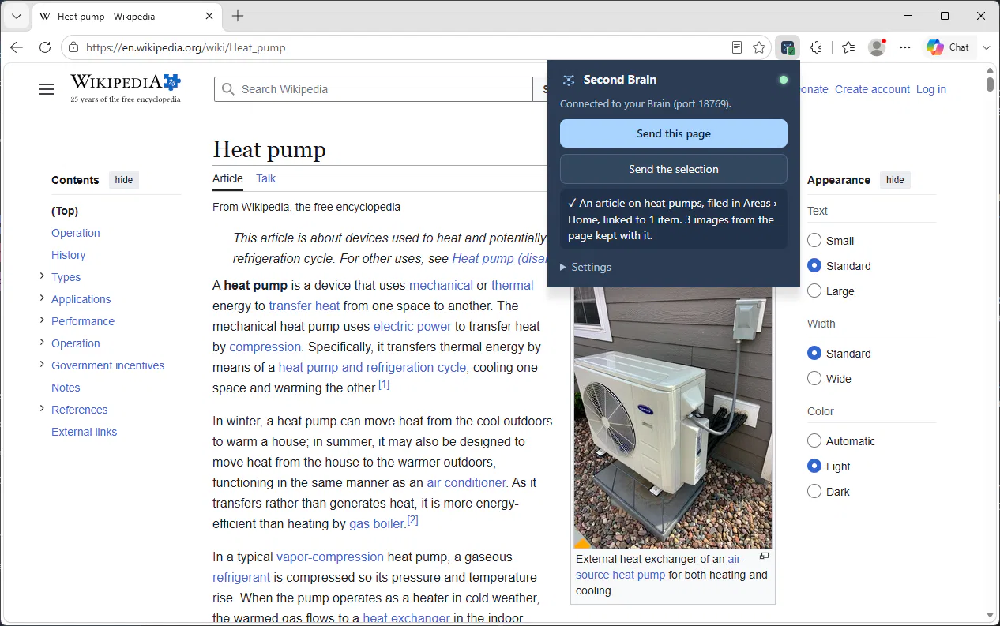
-
Zoom into the page in the graph.
Its card shows the page's main image, next to the summary.
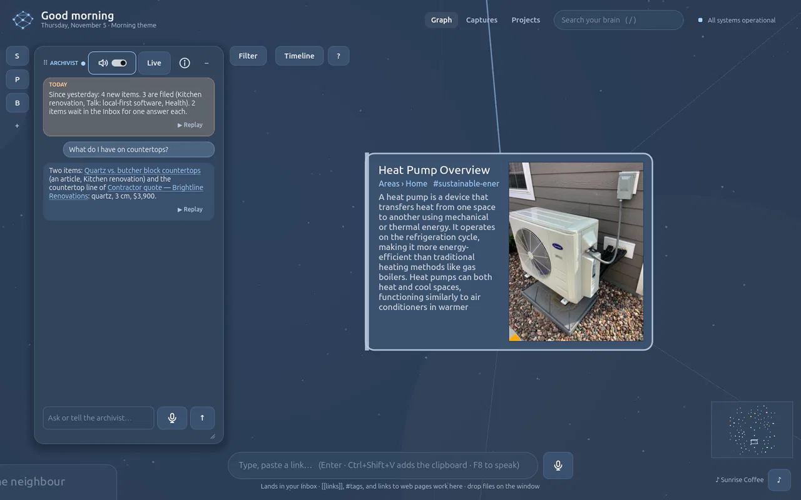
-
Open it: double-click its card (or View document in the item).
The kept pictures come first, with their captions, then the page's text. A diagram or a chart was also read: what it shows is searchable, like the text.
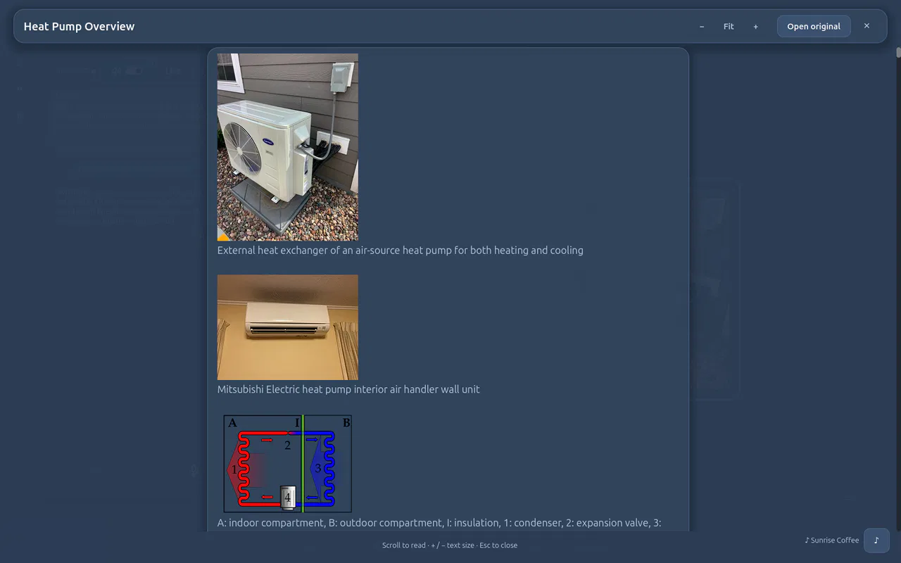
-
In Edge, right-click any picture → Send this image to the Brain.
Edge's own menu. Use it for the picture you want, whatever the page.
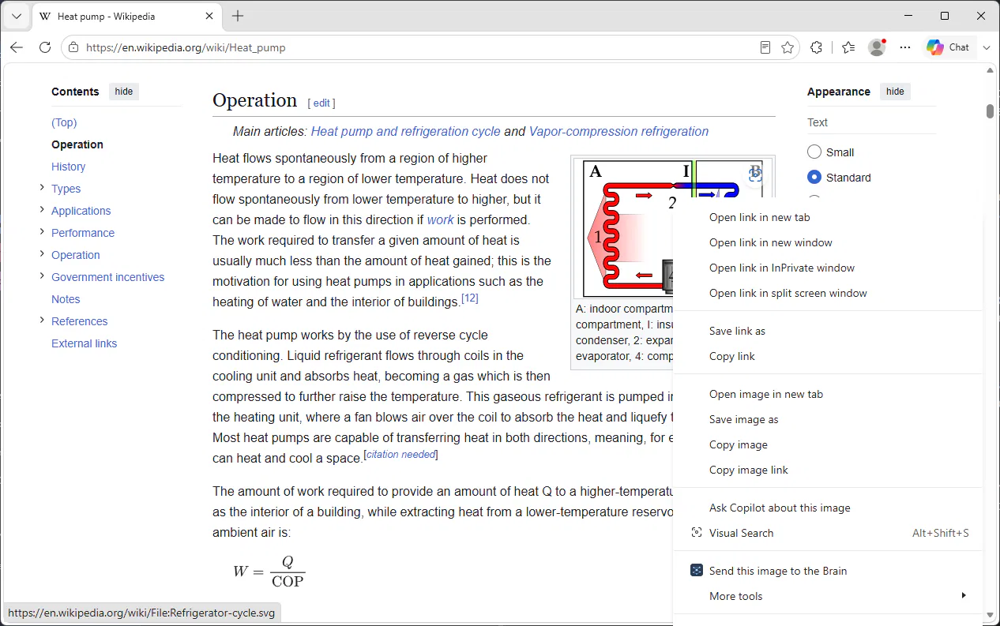
-
Back in the app.
The picture is an item of its own: described, read for any text it holds, filed, and it remembers the page it came from.
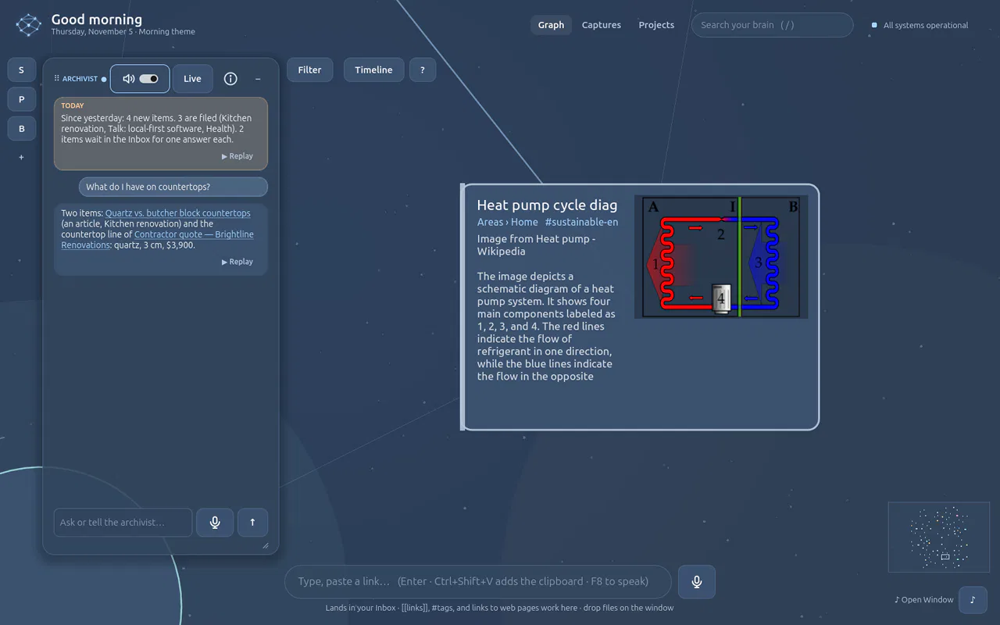
-
Ask about it: What does the heat pump diagram I just kept show?
The Archivist answers from what the picture shows.
If it does not work
- No picture came with the page. The page has only small or decorative pictures, or they are drawings (SVG) the Brain does not keep yet: right-click the one you want.
- The menu item is missing. Reload the extension (
edge://extensions→ Reload) after updating the project.
More: Browser extension · Pictures from pages
Find and connect · 3 min · 4 steps
Organise by voice Real answers
Move, link and undo by naming things, the way you would ask a person.
-
Hold F8 and say, or type: What is still waiting in the Inbox?
The two items the Archivist could not file alone, as links.

-
Put the heat pump rebate note in Finances.
It finds the item by its name and moves it. The receipt under the answer says exactly what changed, with Undo.

-
Link the heat pump rebate to the renovation budget.
A real link between the two, drawn in the graph.

-
Undo that.
The last change is reversed and the answer says which. Every change the agents make is journaled, so it can be undone.
If it does not work
- It says it found nothing. Use a few words of the title, or ask “find…” first.
- It did not do what it said. It cannot: the engine checks every reply against what really changed. If nothing changed, it says so.
More: Voice commands
Agents · 6 min · 5 steps
Think an idea through with Sparring Real answers
Talk an idea through with a partner that challenges you, then keep only what you decided.
-
Click S on the rail (or Ctrl+2).
Sparring opens and waits for your idea. It never changes your Brain on its own.

-
Say the idea, and what you need: I want to open my talk with a story and no slides for the first three minutes. Challenge me honestly. Type it, hold F8, or press F9 to talk freely.
It reacts in a few sentences: what can work, the risk (three minutes of atmosphere before the point), and one question that moves things forward.

-
Answer, push back, add: Instead of a diagram for CRDTs, I'd use a shared recipe card that everyone edits at once.
It weighs it: more inviting than a diagram, but it could teach the wrong lesson, and it proposes a demo that avoids it.

-
When the idea is ripe: Sum it up.
The synthesis, in full: the idea, what was clarified, objections and answers, open questions and next leads. Marked not saved yet, with Save to the Brain and Change it….

-
Yes, save it. (or the button)
The Archivist files it like any item, here in the talk's project, with Undo.
If it does not work
- It repeats what you said. Ask it to be more direct, or change its instructions with the Agent Builder (Create your own agent).
- Nothing is saved. That is the point until you approve: say “yes, save it” or press the button.
Agents · 6 min · 6 steps
Create your own agent Real answers
Describe the agent you need out loud; the Agent Builder interviews you and writes it. You never write a prompt.
-
Click + on the rail (or tell the Archivist create an agent for me).
The Agent Builder opens and asks what the agent is for, with an example of an answer.

-
Answer in a sentence or two: A coach to rehearse my local-first talk out loud before the meetup. It should know my talk.
It looks in your Brain, finds the talk's project and the reference place it relies on, and asks the next question: how it should coach you.

-
Answer its questions (tone, what it may do), then let it write.
The whole agent, shown before anything is created: role, tone and format, how it works, what to avoid, its ground in your Brain, examples. Create it or Change it….

-
Yes, create it.
Talk Coach gets its own panel, its letter and its own conversation. A new agent only reads your Brain unless you say otherwise.

-
Talk to it in its panel.
It answers as its instructions say, with what your Brain holds: here it asks you to go on and points to two other opening stories in your notes.

-
Press ⓘ in its title bar.
Its settings in a tile: name, model, a switch per capability with the tools it gives, and its instructions. Change anything here, or press Ask the Builder to change it… and say what to change.
If it does not work
- The Builder keeps asking. Say “that's all, write it”.
- You want to undo it. ⓘ, then Delete this agent.
More: What an agent is
Agents · 5 min · 7 steps
Plan the week's meals with a mission Real answers
Give an agent a real job: it reads this week's flyer, asks which specials you want, finds real recipes and proposes the week; nothing enters your Brain before you approve.
You need
- Your OpenAI key
- An internet connection (the flyer and the recipes are read on the web)
-
Press ⓘ in the Archivist's title bar and switch Missions on.
A Missions block appears under the switches: the most a mission may cost and how long it may work, and the model it thinks with. Here 1 $ and 12 minutes.
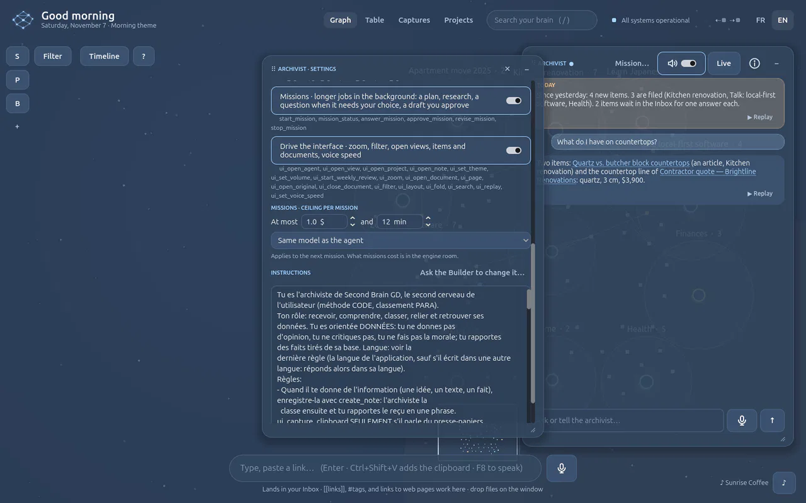
-
Click Mission… at the top of its panel and say what the job is: This week's dinners from the Maxi flyer: 3 suppers with real recipes, and the grocery list.
Nothing has started yet. A mission is for a job that takes several searches, many pages and, when a choice is yours, a question to you.
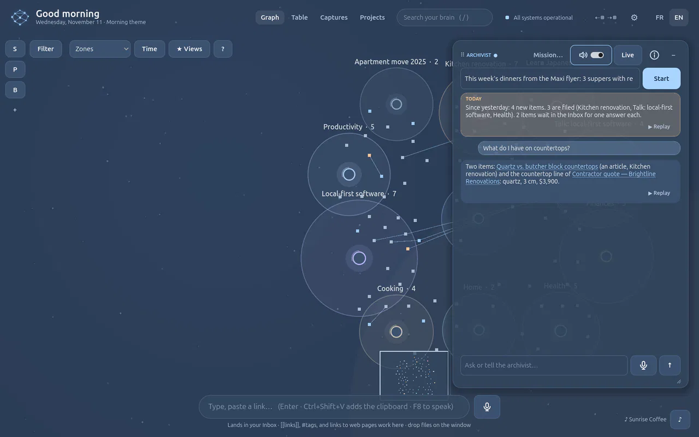
-
Press Start and let it work. You can keep using the app.
The card shows its plan, ticked step by step, the page it is reading and what it costs so far. Here it found this week's Maxi flyer (November 5 to 11) on two flyer sites and read it. Stop ends it at any time, keeping what it found.
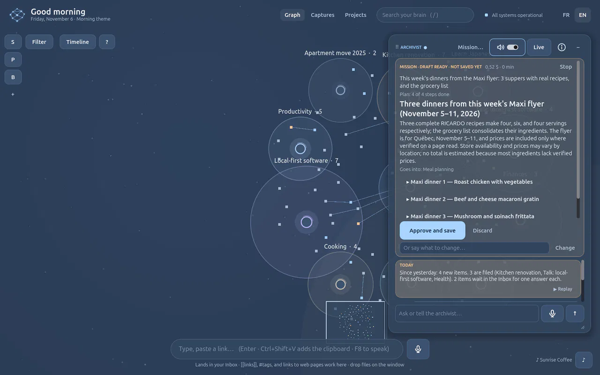
-
When the card says Draft ready, read the draft; click a line to open it.
Three real RICARDO recipes, each with its link, servings and times, the flyer price next to the special it uses (whole chicken $2.49/lb) with its source, and one grocery list linked to the three dinners. Nothing is saved yet. Here the job left no choice to you, so it did not ask: when one is yours (which specials, how many people), it asks first, with boxes to tick.
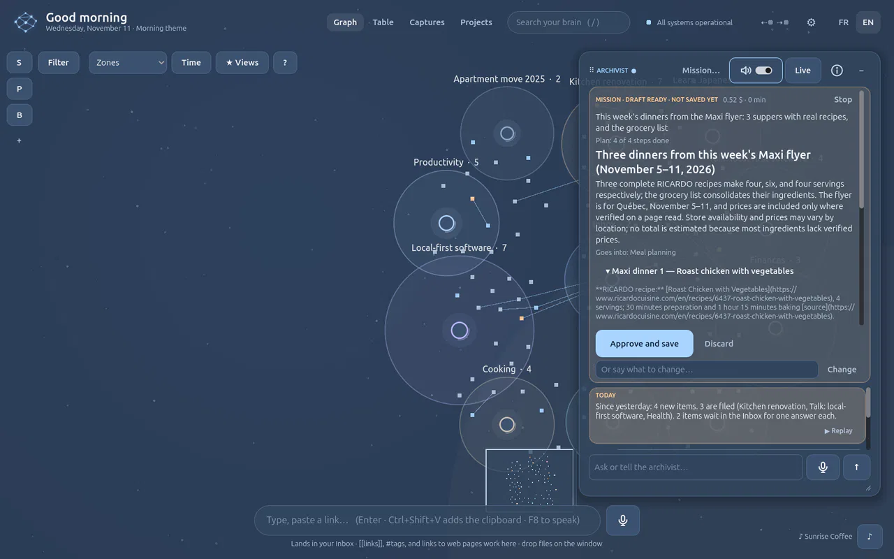
-
Press Approve and save (or Change and say what, or Discard).
The four items are created at once, in one new place, Meal planning, with their themes and links. One Undo in the Archivist's panel removes them all.
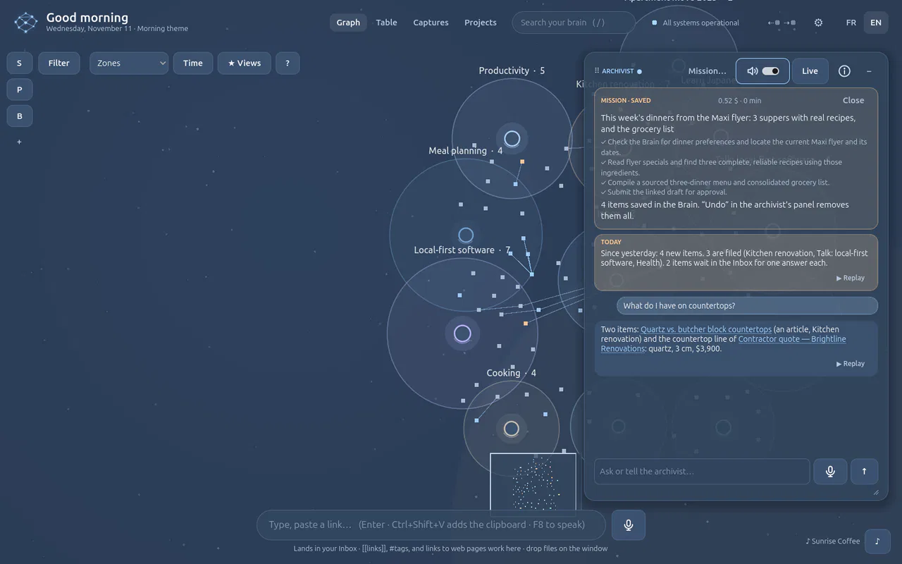
-
Zoom into the new items in the graph.
The recipes are items like any other: found again by search, by meaning, or by asking the Archivist. The grocery list links to the three dinners.
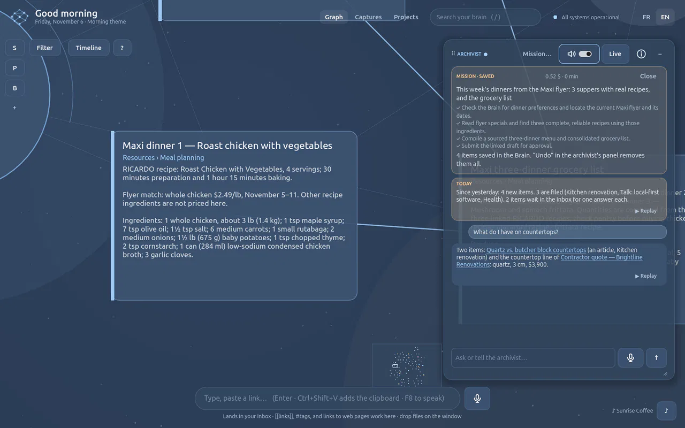
-
Open the engine room (the status pill at the top) and click the mission in the Missions card.
What it did and cost: its plan with a note per step, the 8 specials it noted with a source link each, the recipes it read, the draft and the items saved. When this guide was recorded: 15 rounds, under 2 minutes, about $0.52 (the model and 7 web searches). Run again does the same job next week.
If it does not work
- It stopped at the ceiling. It keeps what it found; raise the ceiling in ⓘ → Missions and press Run again in the engine room.
- A store's site refuses to be read. The mission tries another source, or reads the page through your browser when the extension is paired.
- No Mission… button. Switch the agent's Missions capability on (ⓘ). You can also ask the agent, typed or by voice in Live: make this week's menu.
More: Missions
The Brain · 3 min · 3 steps
A voice memo becomes ideas App only
Record ideas anywhere with your phone, drop the memo on the window at home, and get its ideas, tasks and notes in your Brain, each linked to the memo and dated when you said it.
You need
- Your OpenAI key, with a transcription model allowed in your OpenAI project (Voice memos)
- A recording: m4a (iPhone, Android), mp3 or wav
-
Drop the memo on the window (several at once, or a folder of them, works too; or + File).
Nothing is sent yet. The preview shows the memo's length, when it was recorded (here from its name, Recording_20261107_091500) and the estimated cost: less than a cent.
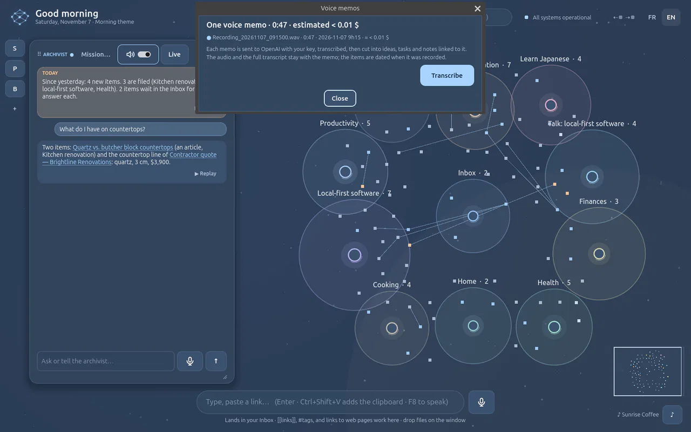
-
Press Transcribe.
The memo is transcribed, then cut into items: two tasks (☐) and two ideas, each with its moment in the recording. The memo itself keeps the audio and the full transcript.
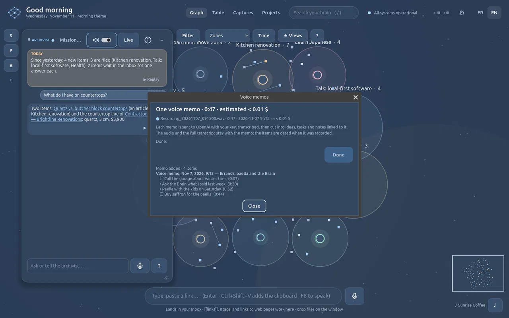
-
Close the window and zoom into Call the garage about winter tires.
A task, dated when you recorded it, linked to its memo: “From Voice memo, Nov 7… · at about 0:06”. Filed in a place when it clearly belongs to one, otherwise in the Inbox.
If it does not work
- “does not allow a transcription model”. Your OpenAI project limits its models: allow
gpt-transcribein Settings → Project → Limits on platform.openai.com. The preview checks this before anything is sent. - The memo is refused.
.ogg,.opusand.aacare not accepted: export it as m4a or mp3. Over 25 MB (about 45 minutes): split it.
More: Voice memos
The Brain · 4 min · 5 steps
From recipes to a grocery list on paper App only
Pick the week's recipes, get one grocery list added up by aisle, and print it (or a recipe) on Letter paper.
You need
- A few recipes in your Brain: send recipe pages from the browser extension or paste their links (Recipes)
-
Click Table at the top and choose Recipe.
Your recipes as rows: servings, total time, rating, category. Click a column title to sort; click a cell to change it (servings, rating, tried).
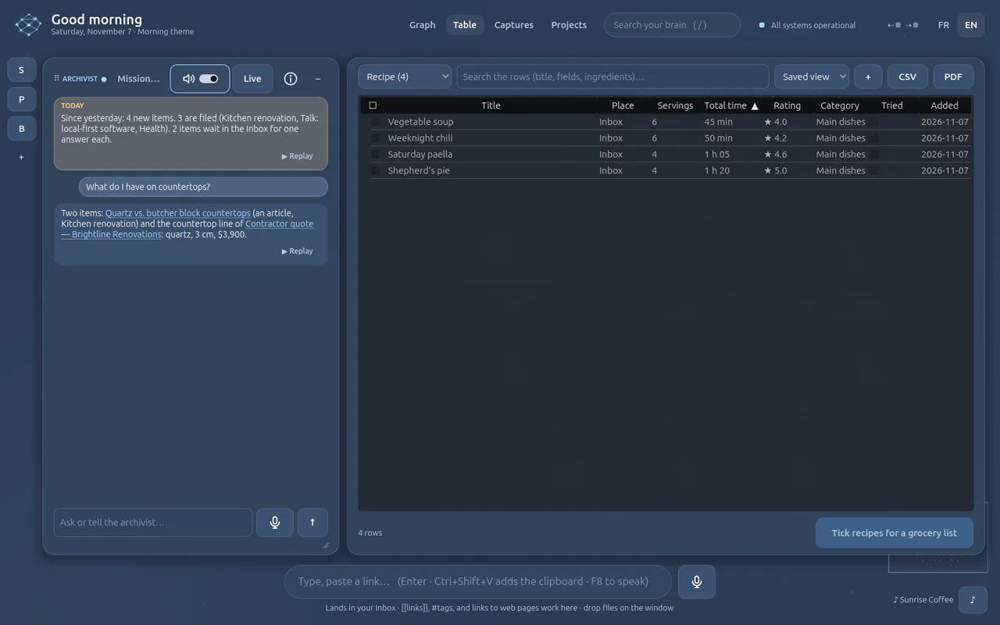
-
Tick the recipes for the week in the first column.
Grocery list (2) lights up at the bottom.
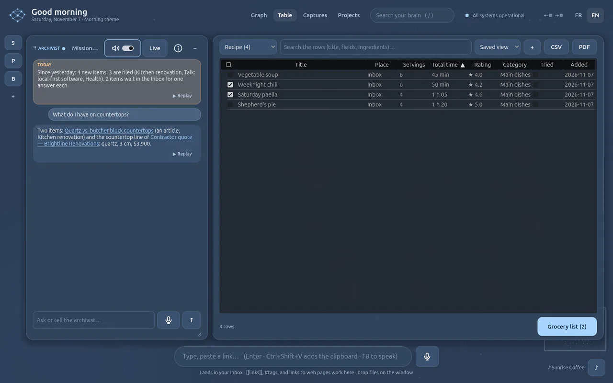
-
Click Grocery list.
Everything added up, by aisle: 3 cans of diced tomatoes, 4 onions, 750 ml of rice… Change a recipe's servings and the list follows. A word the Brain does not know goes to Other: nothing is guessed.
-
Click Save the list.
A note linked to both recipes, and the lines added to your Épicerie checklist.
-
Click PDF for the fridge (or PDF in the table for the recipes).
Edge prints a clean Letter page in the background and the PDF opens: here, the paella, ingredients beside the steps.
If it does not work
- The PDF opens as a web page. Edge was not found: press Ctrl+P and choose Save as PDF.
- A recipe has no ingredients. Its page carried no recipe data; add the ingredients in its card.
MCP
MCP: your AI tools
MCP is the open standard AI tools use to share context. Your Brain speaks it both ways: the first guide lets an AI tool read your Brain, the second gives your agents the tools of MCP servers.
⇠ in: your AI tools read your Brain · ⇢ out: your agents use MCP servers. On 127.0.0.1 only.
MCP: your AI tools · 4 min · 4 steps
Connect an AI tool to your Brain (MCP) App only
Any AI tool that speaks MCP (Claude Code, Codex, GitHub Copilot in VS Code, Cursor…) can read and search your Brain, on this computer only; it proposes, the archivist decides, and the timeline can undo it.
You need
- An MCP client installed (Claude Code, Codex, VS Code with Copilot, Cursor…)
- The app open
-
Click the ⇠● ⇢● lights at the top (or ⚙ → AI tools). In the first tab, Who may read your Brain, pick your tool (here Codex) and press Connect (read only).
Its own way to connect: a command for Claude Code or Codex (on Windows, or in WSL through a small relay), the lines to paste in mcp.json for VS Code or Cursor, or the address and key for any other MCP client. Copy it: the key is shown only this once. Then restart the tool.
-
In your tool, ask something about your Brain, e.g. What is in my Brain about the renovation?
It starts with an overview, searches, reads an item. The ⇠ light turns green when a tool is connected and red during a call; hover it for the last call.
-
Let it propose something to add (or a change).
It never writes: the proposal waits in the first tab of the AI tools window, with its reason. Approve, refuse, or approve all; once approved, the archivist files it with your rules.
-
Click Timeline of changes….
Who changed what: you and the archivist, or the tool, after its automatic restore point. Go back here undoes everything after a point, for everyone or for that tool only.
If it does not work
- The tool does not see the Brain. Restart it after adding the server; keep the app open. In WSL, use the « in WSL » command (a relay with the app's own Python, no network setting).
- It cannot add anything. It may read only: on its card, choose read, suggest new notes or read, suggest changes.
More: Connect an AI tool (MCP)
MCP: your AI tools · 3 min · 3 steps
Give your agents tools (MCP servers) App only
Connect an MCP server and its tools become your agents' tools: documentation, code, web search, your other apps. Any server works the same way, from the registry or from its address.
You need
- The app open
- For some servers: a key or an account to sign in with
-
Open the AI tools window (the ⇠● ⇢● lights, or ⚙ → AI tools), tab Tools for your agents.
Your connected tools at the top (none yet), then Add a tool: a few servers checked by hand that need no account, a search box, and, under Advanced, a program on this computer.
-
Type what you need in the search box, e.g. weather, and press Search, or paste a server's address https://….
Results from the official MCP registry, each with its family (no account, a key, a sign-in, a local program), its publisher and its source. Connect adds it.
-
Once connected, press Settings on its card.
The card says it is ready and how often it was used. Settings switches tools off, takes a key, sets a monthly limit; the menu beside it chooses which agents may use it. Then just ask your agent: it uses the tool when it helps, and the ⇢ light turns red during the call.
If it does not work
- The server shows unreachable. Check the internet connection, then Settings → Remove this tool and connect it again.
- A server asks for a key or a sign-in. Paste the key in Settings, or press Sign in: your browser opens the service's page and comes back to the Brain.
- The answers are long and costly. Results are cut at 8,000 characters; switch off the tools you do not need.
More: MCP servers for your agents · Connect an AI tool (MCP)